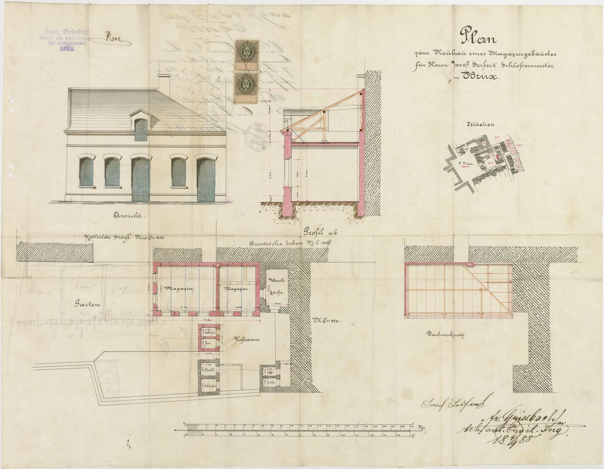
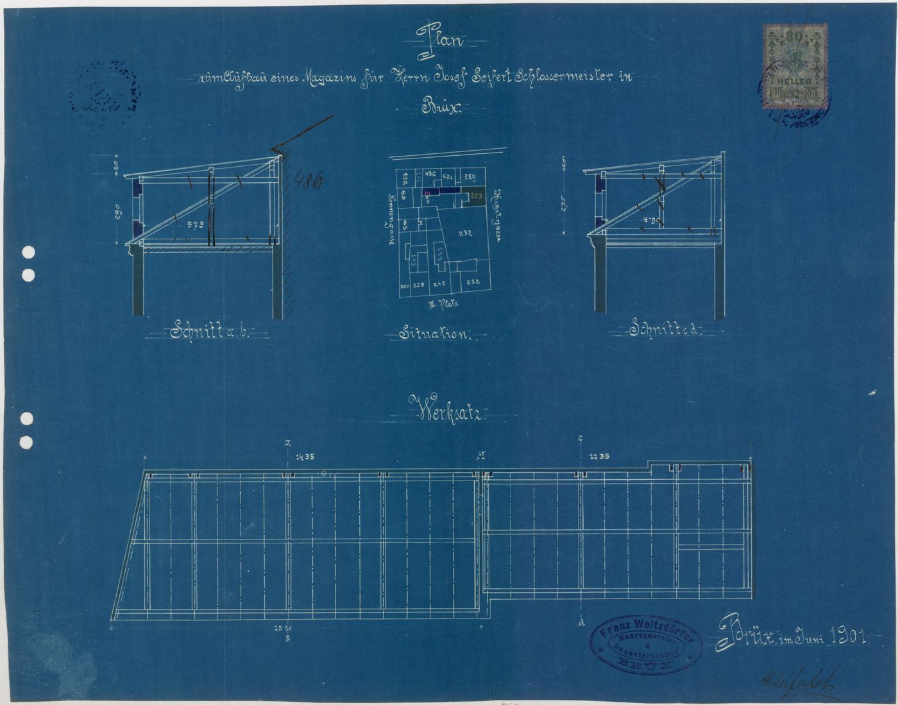
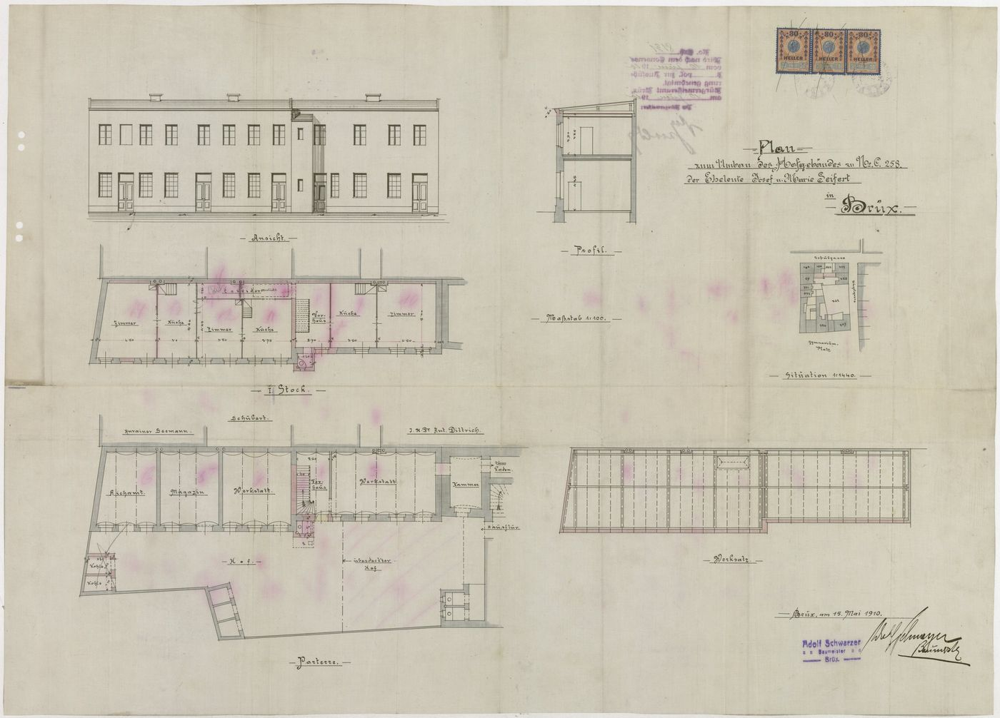
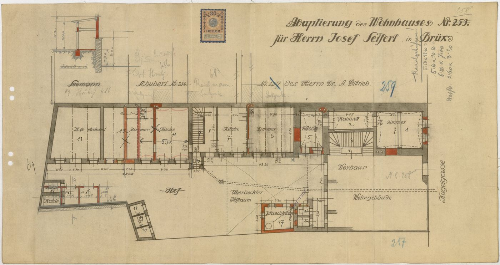
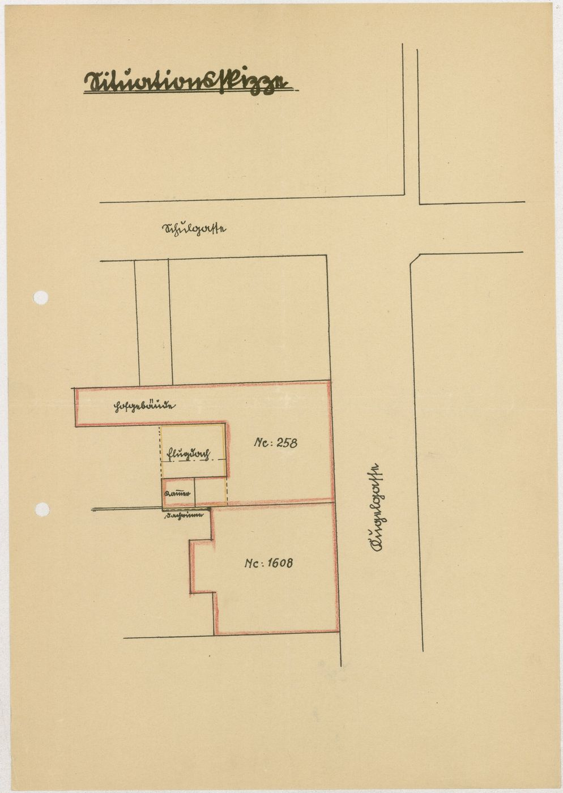
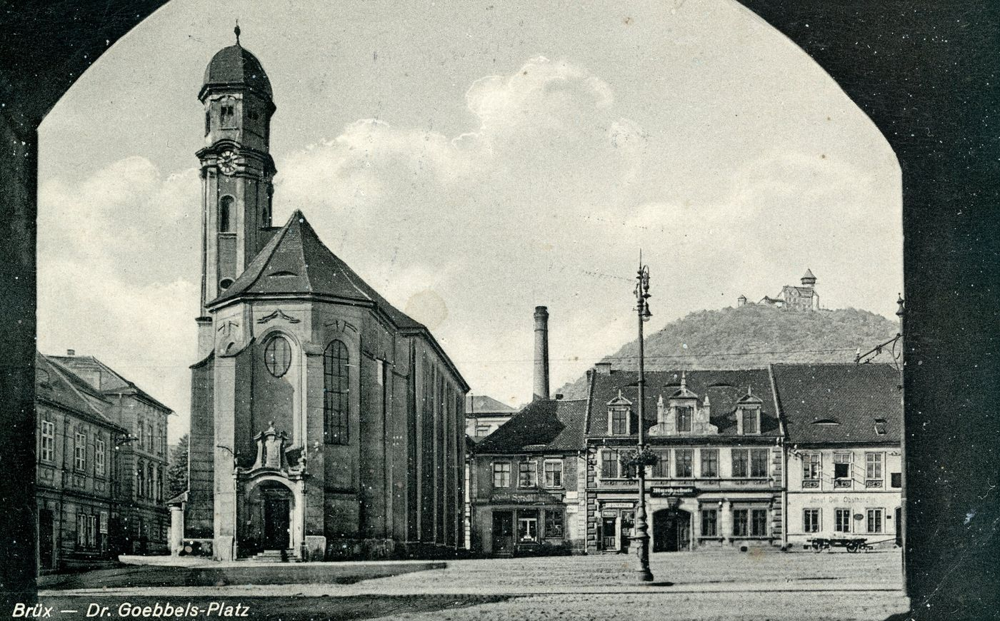
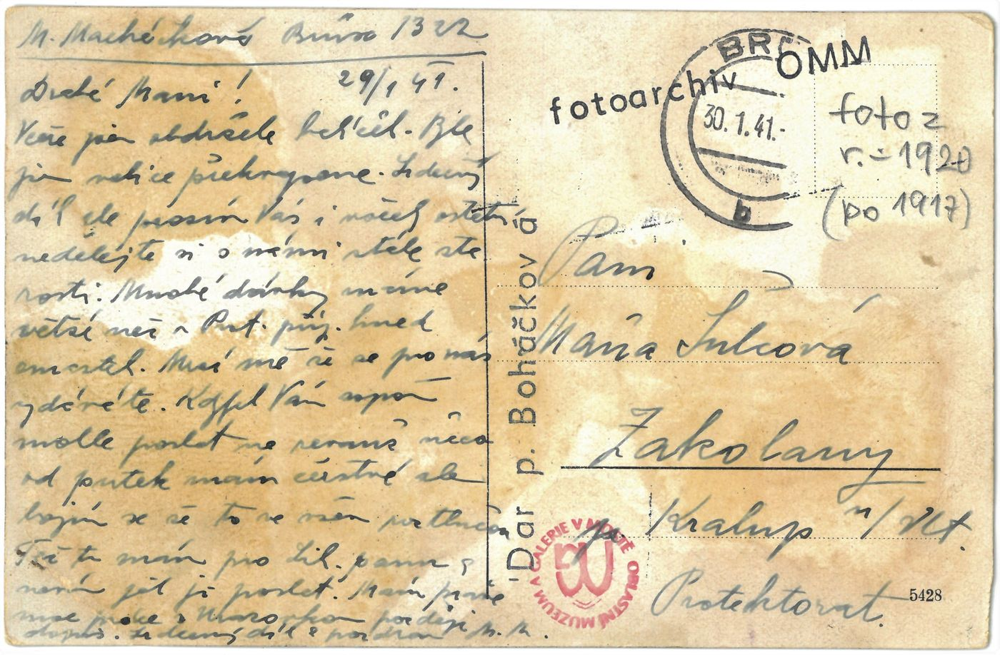
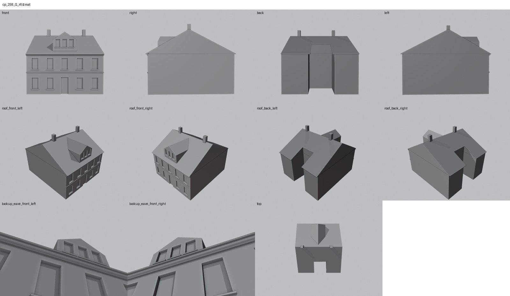

Identita domu
Stav rekonstrukce: Celá uliční fasáda je hypotéza. Žádná fotografie ani plán nezobrazuje průčelí v plné šířce; model kombinuje vikýř se třemi okny ze snímku kolem roku 1968, vstup uprostřed podle neúplného půdorysu (cp_258_004) a obecné osy oken.
Dvoupodlažní dům mezi 259 a 1608 s vysokým středovým štítovým vikýřem se třemi okny (snímek od schodů kolem roku 1968, dům je za stromem). Uliční fasádu v plné šířce nezobrazuje žádná fotografie ani plán; vstup přibližně uprostřed uliční stěny je odvozen z neúplného půdorysu „Adaptierung des Wohnhauses Nr. 258“ (cp_258_004). Celá fasáda je proto hypotéza, kterou uživatel 20. 10. 2026 schválil jako hypotézu.
Použité prameny: snímek od schodů kolem roku 1968 (cp_258,259,260,1608_001), půdorys cp_258_004 (uliční stěna s pokojem 1 a Vorhausem), GIS půdorys; ostatní plány 258 (cp_258_001–003, 005) kreslí dvorní budovy.
Přílohy v databázi (9)
Všechny přílohy struktury 258 v databázi Libuše, načtené 18. 10. 2026 a otevřené. Kliknutím otevřete větší náhled.


plán / výkres
SHA-256 9f1fb9e96b83…


plán / výkres
SHA-256 8f354655de51…


plán / výkres
SHA-256 250091c2e28f…


plán / výkres
SHA-256 b7646e04f54f…


plán / výkres
SHA-256 5d0b81c7b07c…


pohlednice
SHA-256 4425c866a184…


pohlednice
SHA-256 db59d0f8e122…

archivní karta
SHA-256 99035b68c24f…

odvozenina (kolorovaná / FRONT)
SHA-256 f4cc505a9f70…
Geometrie
| Revize geometrie | r6 |
|---|---|
| Poloha | GIS půdorys id 313 (ulice Kulová) |
| Šířka průčelí | 13,25 m |
| Výška okapu | 7,00 m (odhad) |
| Podlaží | 2 |
| Střecha podle pramenů | sedlová, štíty k sousedům, středový štítový vikýř (hypotéza) |
| Otvory / vikýře | 13 / 1 |
| Polygonů | 283 |
| Kontrola podkroví (20. 10. 2026) | prošla: vlasové zásahy do podkroví 1 ze 103 680 paprsků ze 120 pohledů; nekryté zdivo 0,00 m², střecha nad prázdnem 0,00 m² |
Kontrolní pohledy

Textury
Codex: zablokováno, podklad FRONT je jen částečný
Až Codex dodá texturovaný model, objeví se v prohlížeči nahoře volba Textury (Codex).
Hypotézy
Stav rekonstrukce: Celá uliční fasáda je hypotéza. Žádná fotografie ani plán nezobrazuje průčelí v plné šířce; model kombinuje vikýř se třemi okny ze snímku kolem roku 1968, vstup uprostřed podle neúplného půdorysu (cp_258_004) a obecné osy oken.
Vše níže je model_hypothesis, provisional, locked: false.
- identita: databázový FRONT „259“ přiřazen tomuto domu podle fotografie (SOL61 jej u 259 odmítla)
- osy a výšky odhad z fotografie
- plány 258 (magazín 1888, dvorní křídlo 1910) nejsou uliční průčelí
- 20.10.2026 d: celá uliční fasáda je hypotéza schválená uživatelem jako hypotéza (ne jako doložený stav)
- okna v přízemí i patře jsou generické osy; vikýř a vstup s nízkou mírou doložení
Soubory
- Geometrie čp. 258, GLB
- Pracovní model: F:\MOST\output\kulova_geo_fix2_claude_2026-10-20\houses\cp258\r6\cp_258_G_r6.blend
- Plán modelu: F:\MOST\output\kulova_geo_fix2_claude_2026-10-20\houses\cp258\geometry_plan.json